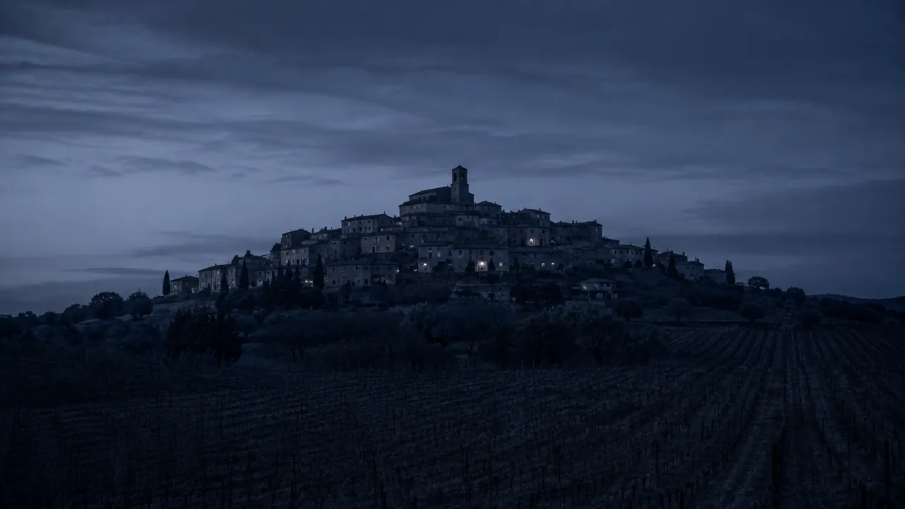

La plage la plus célèbre de France
Nikki Beach, Club 55 — Pampelonne est une marque mondiale. Restaurants, clubs, locations de villas, brokers yacht : un marché estival ultra-concurrentiel où la visibilité en ligne fait la différence.

Entre vignes AOC, plage de Pampelonne et village perché — Ramatuelle attire une clientèle internationale parmi les plus exigeantes de France. Agence immobilière, conciergerie, restaurant ou broker yacht : je conçois des sites sur mesure qui valorisent votre établissement face à cette clientèle d'exception.
Ramatuelle concentre en quelques kilomètres carrés trois marchés distincts — la plage de Pampelonne mondialement connue, le village médiéval perché et ses vignobles AOC Côtes de Provence. Chaque territoire a ses clients, ses recherches Google et ses spécificités digitales.
Nikki Beach, Club 55 — Pampelonne est une marque mondiale. Restaurants, clubs, locations de villas, brokers yacht : un marché estival ultra-concurrentiel où la visibilité en ligne fait la différence.
Ruelles pavées, restaurants gastronomiques, hôtels de charme, conciergeries premium — le village de Ramatuelle attire une clientèle cultivée et aisée qui cherche l'authenticité provençale.
Rosés de renommée internationale, domaines viticoles familiaux, vente directe — les producteurs de Ramatuelle ont besoin de sites qui vendent leur vin autant qu'ils racontent leur terroir.
Restaurants, clubs, locations de villas, brokers yacht. Pic de recherches Google. Votre site doit convertir en secondes.
Des milliers de festivaliers cherchent hébergements, restaurants et conciergeries à Ramatuelle.
Les domaines viticoles AOC attirent une clientèle œnotouristique internationale. Cave en ligne essentielle.
Agences immobilières, conciergeries, prestataires locaux. Le SEO local Ramatuelle génère des contacts toute l'année.
Ramatuelle partage avec Saint-Tropez une clientèle internationale exigeante. Chaque professionnel a ses propres besoins digitaux — je maîtrise les spécificités de chacun dans le Golfe.
Listings premium, galerie villas Pampelonne, multilingue FR/EN/DE. Référencé sur "location villa Ramatuelle", "villa Pampelonne", "agence immobilière Golfe Saint-Tropez".
Interface haut de gamme, formulaire de services multilingue. Référencé sur "conciergerie Ramatuelle", "services luxury Pampelonne", "conciergerie Golfe Saint-Tropez".
Catalogue de flotte premium, galerie multimédia, formulaire de réservation. Référencé sur "broker yacht Ramatuelle", "location yacht Pampelonne", "charter bateau Golfe Saint-Tropez".
Galerie immersive, réservation WhatsApp, menu digital, multilingue FR/EN/IT. Référencé sur "restaurant Pampelonne", "club de plage Ramatuelle", "dîner bord de mer Var 83".
Votre activité n'est pas listée ? J'accompagne tous les professionnels de Ramatuelle — hôtels, domaines viticoles, photographes, prestataires événementiels.
Discutons de votre projetRamatuelle est l'une des communes les plus singulières de France. En quelques kilomètres carrés coexistent la plage de Pampelonne — 3 km de sable fin, clubs mondains et restaurants étoilés les pieds dans l'eau — le village perché médiéval avec ses ruelles et ses festivals, et les vignobles AOC Côtes de Provence qui produisent certains des meilleurs rosés du monde.
Pour un professionnel de Ramatuelle, cette diversité est une opportunité SEO exceptionnelle. Les requêtes Google sont multiples : "restaurant Pampelonne", "location villa Ramatuelle", "conciergerie Golfe Saint-Tropez", "broker yacht Pampelonne". Chaque activité a ses propres mots-clés et sa propre clientèle.
La clientèle de Ramatuelle est la même que celle de Saint-Tropez — internationale, exigeante, connectée. Elle réserve une villa, cherche une conciergerie ou un broker yacht en ligne avant d'arriver. Un professionnel de Ramatuelle peut légitimement cibler les requêtes Saint-Tropez — "agence immobilière Saint-Tropez", "broker yacht Saint-Tropez", "conciergerie Saint-Tropez" — et étendre significativement sa surface de visibilité SEO.
Pampelonne est l'une des plages les plus searchées de France sur Google entre mai et septembre. Des milliers de requêtes par jour — touristes qui planifient depuis Londres, Paris, Stockholm. Un restaurant ou un club qui n'apparaît pas sur "restaurant Pampelonne" perd une part considérable de sa clientèle potentielle. Chaque site que je crée est optimisé pour Pampelonne ET Ramatuelle — deux sets de mots-clés, double visibilité.
Basé à Saint-Tropez, je suis à 10 minutes de Ramatuelle. Je me déplace au village ou à Pampelonne pour la première réunion. J'interviens aussi dans les communes voisines : Gassin, Cogolin, Grimaud et Cavalaire-sur-Mer.
À Pampelonne, tout se joue en douze semaines. Le référencement, lui, se joue avant.
Sud Web Project — RamatuelleCes réalisations illustrent ce que je crée pour les professionnels de Ramatuelle, Pampelonne et du Golfe — agences immobilières, conciergeries, restaurants.

Multilingue FR/EN/DE/IT, galerie premium, chatbot leads, brochure automatique. Conçu pour capter mandats et acheteurs internationaux à Ramatuelle et dans le Golfe.
Voir la démo
7 pages haut de gamme, multilingue FR/EN/IT, réservation WhatsApp, galerie immersive bord de mer. performances optimisées. La référence pour les restaurants de Pampelonne.
Voir la démo
Site complet, performances optimisées. Bouton d'urgence, devis en ligne. SEO "électricien Ramatuelle", "artisan Pampelonne".
Voir la démo
Agence immobilière, conciergerie, broker yacht, restaurant, hôtel, domaine viticole… Devis gratuit sous 24h, maquette avant de commencer.
Demander un devis gratuitVotre site est optimisé pour les deux territoires : "restaurant Pampelonne", "villa Ramatuelle", "conciergerie Golfe Saint-Tropez". Double visibilité Google dès la mise en ligne.
La clientèle de Ramatuelle vient du monde entier. Britanniques, Allemands, Italiens, Scandinaves — un site dans leur langue multiplie vos réservations et votre confiance internationale.
Vos clients chargent votre site depuis Pampelonne en 4G. Zéro WordPress, code à la main, images WebP. Chargement rapide. Google récompense la vitesse.
Basé à Saint-Tropez, à 10 minutes de Ramatuelle. Je me déplace au village ou à Pampelonne. Je connais chaque territoire, chaque saison, chaque type de client de la commune.
Cave en ligne, vente directe, agenda des événements, storytelling du terroir. Je crée des sites qui racontent votre domaine et vendent votre vin en plusieurs langues.
Votre site vous appartient entièrement. Code, contenu, domaine — tout est à vous. Aucun enfermement dans une plateforme. Aucun abonnement mensuel obligatoire.
Une vigne ne donne rien la première année. Ce qui dure se plante tôt.
Sud Web Project — RamatuelleUn devis clair avant de commencer. Vous restez propriétaire à 100% de votre site.
Basé à Saint-Tropez, à 10 minutes de Ramatuelle, je crée des sites internet pour les professionnels de Ramatuelle, Pampelonne et des communes voisines. Chaque ville a sa page avec un SEO spécifique.
Site internet Ramatuelle · Développeur web Pampelonne · Site restaurant Pampelonne · Agence immobilière Ramatuelle · Saint-Tropez · Gassin · Grimaud · Cogolin · Cavalaire · Var (83)
Le tarif ne dépend pas simplement du nombre de pages. Chaque projet est différent : le prix dépend du niveau de personnalisation, des objectifs, des fonctionnalités et de l'accompagnement souhaité. Mes projets commencent à 850 € avec l'offre Essentiel. L'offre Premium commence à 1 500 €. Les projets nécessitant une expérience entièrement personnalisée font l'objet d'un devis sur mesure avec l'offre Ultra. Devis gratuit sous 24h, sans engagement.
Oui. Je crée des sites internet premium pour les agences immobilières et conciergeries de Ramatuelle et Pampelonne : galerie villas, multilingue FR/EN/DE, chatbot leads, brochure automatique. Référencé sur "villa Ramatuelle", "conciergerie Golfe Saint-Tropez". Voir la démo Azur Villa Prestige.
Un site essentiel est livré en 4 à 5 jours ouvrés. Un site Premium pour un restaurant de Pampelonne en 2 à 3 semaines. Un site Ultra multilingue en 3 à 5 semaines. Délais engagés dans le devis.
Oui. Chaque site est optimisé pour les deux territoires dès la mise en ligne : H1 géolocalisés Ramatuelle et Pampelonne, Schema.org LocalBusiness, Google Business Profile configuré. Vous apparaissez sur "votre activité + Pampelonne" ET "votre activité + Ramatuelle". Résultats visibles.
Oui. La clientèle de Pampelonne est l'une des plus internationales de France. Je crée des sites en FR/EN/IT/DE selon votre clientèle cible. Voir l'exemple : La Table Méditerranéenne (FR/EN/IT) — performances optimisées, réservation WhatsApp, galerie immersive.
Oui. Basé à Saint-Tropez, à 10 minutes de Ramatuelle. Je me déplace au village médiéval ou à Pampelonne pour la première réunion. La consultation est gratuite — en présentiel ou en visioconférence.
Oui. J'accompagne les professionnels de tout le Golfe : Gassin, Saint-Tropez, Grimaud, Cogolin et Cavalaire-sur-Mer. Chaque commune a sa propre page SEO dédiée.
Basé à Saint-Tropez, à 10 minutes de Ramatuelle, je crée des sites internet qui correspondent à l'exigence de ce territoire unique. Agence immobilière, conciergerie, broker yacht ou restaurant — votre site mérite le même soin que votre établissement.
Devis 100% gratuit · Sans engagement · Réponse sous 24h · Déplacement Ramatuelle & Pampelonne · Var 83